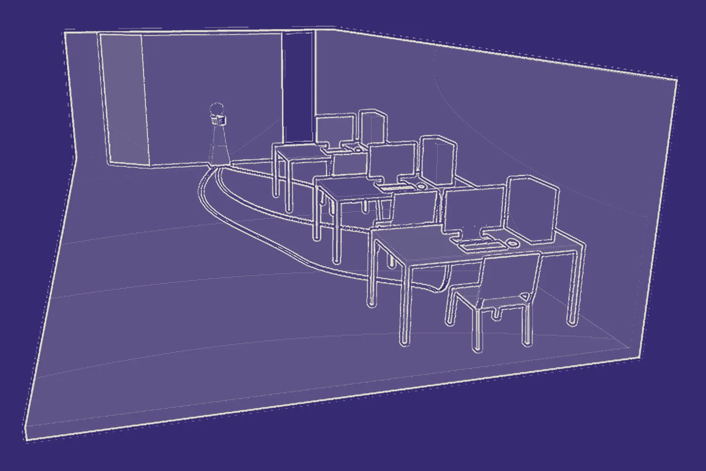

Mundo de la llave · una mudanza
Llegó el día
Voz—Llegó el día, por fin me voy a mudar.
Seguí bajando para recorrer el camino, de puerta en puerta →
Experiencia interactiva
¿Estás dispuesto a buscar en lo que te resulta habitual?
Recomendado: auriculares · Se recorre con scroll
La idea
Los objetos cotidianos pueden adquirir un significado que trasciende su utilidad.
Algunos cobran un valor muy distinto, y hasta pueden volverse una extensión de nosotros. Lo que hace falta es una relectura: una segunda mirada de eso que dabas por sentado.
Bienvenido a Memoria Material,
una experiencia donde vas a darle una nueva mirada a lo cotidiano.
¿Nunca tuviste un objeto, un momento, un hábito…
…que con el tiempo pasó de ser cotidiano y rutinario, a resignificarse como algo importante y propio de vos?
Hoy vas a recorrer un circuito que recrea lo que pasaba en tu mente en ese momento:
los procesos cognitivos que se daban en el instante en que te diste cuenta del nuevo valor de ese elemento cotidiano.
Acercate a la computadora designada
y preparate para vivir esta experiencia.
Guion del video de bienvenida · se proyecta en el aula
Antes de empezar · El espacio físico
El lugar está a oscuras, con ruido blanco. Tres computadoras encendidas con luz blanca y el proyector prendido. Cada participante tiene su estación con la experiencia en Unreal; un tótem y un camino de luces conectan lo que pasa en pantalla con el aula.
Tocá los puntos para conocer cada parte

El circuito
Abre la experiencia con el video de bienvenida: motion de texto y voz en off, con escenas cotidianas donde ciertos objetos se resaltan con color.
Vuelve a encenderse antes de la Etapa 5 y al final, con el video de cierre.
En la Etapa 3 cada participante sale un momento de Unreal y deposita acá el objeto que eligió. En la Etapa 4, al volver, solo encuentra humo.
Al final, el tótem guarda esferas físicas (rosa, amarilla y celeste) con los objetos adentro.
Un camino de luces en el piso une las estaciones con el tótem. Se enciende cada vez que hay que salir de Unreal: es el mismo pulso de luz que recorre el pasillo de la Etapa 3.
Tres computadoras con luz blanca. En cada una, un participante recorre las seis etapas en Unreal: del desierto de la plasticidad sináptica a la búsqueda del significado.
En una mesa cercana al tótem. Cuando se deposita el objeto, proyecta un ícono que anticipa la próxima zona del cerebro a transitar: el ícono que permite abrir la puerta de la Etapa 3.
Ubicación exacta e ícono por confirmar.
En la Etapa 5 aparecen apoyados al final del pasillo. Con ellos puestos, en la Etapa 6 los objetos se ven en wireframe y hay que encontrar las esferas que brillan.
Etapa 01 · Unreal
El cerebro reorganiza la conexión entre los objetos que reconoce y el significado que le evocan.
Reorganizá las conexiones
Tocá una esfera para escucharla. Después tocá el objeto que le corresponde.
Las tres conexiones están hechas. Seguí bajando: la plataforma se eleva.
0 de 3 conexiones
Conexiones hechas
La plataforma se eleva. Para continuar con la experiencia, atravesá la puerta.
Etapa 02 · Unreal · Dentro de la cúpula
Cada objeto guarda lo que vio, escuchó y vivió con vos. Se entra por una abertura, de a uno.
El objeto que se recorre primero aparece en color; los demás, en blanco y negro. Al salir de cada mundo se vuelve a la cúpula.
Mundo de la llave · una mudanza
Voz—Llegó el día, por fin me voy a mudar.
Seguí bajando para recorrer el camino, de puerta en puerta →
Cajas de mudanza de todos los tamaños
Voz—Te voy a extrañar, hijo.
Voz—Te regalo esto, espero que te guste.
Lo que se regala a quien se muda
Abrí los cajones de la mesita de luz: en uno está la llave.
La cerradura gigante
La llave está en uno de los cajones
Voz—¡Sí! Acá están.
De vuelta en la cúpula
La llave pasa a blanco y negro. Ahora se colorea el mate: se entra por su base.
Mundo del mate · Escenario 1
Voz 1—Bueno che, al final llegamos. El último recreo del año.
Voz 2—Y el último mate también, ¿lo armo yo?
Voz 3—Uh sí, dale… Espero que este verano no sea como siempre, eh, que nos terminamos viendo de vuelta en marzo en el aula. mate tomado
mate cebándose
Voz 4—Sí, loco, hay que hacer algo. mate tomado
Voz 2—Dejá, yo no les quiero ver más la cara, después de lo que laburamos este año. risas
Voz 3—Daaa, si después andás diciendo que nos extrañás. mate tomado
Mundo del mate · Escenario 2
pájaros · un bostezo · se abren las persianas
Voz 1—Buen día hijo, ¿cómo estás?
Voz 3—Buen día.
click · se prende la radio
Voz 2—Pasame un mate que ya me tengo que ir a laburar. mate cebándose
Voz 1—Obvio amor, tomá.
Voz 2—Gracias amor. mate tomado
Voz 1—Que tengas un lindo día.
Voz 2—Ustedes también, los amo.
pasos · rechina una puerta
Voz 2—Bueno, nos vemos a la noche.
De vuelta en la cúpula
El mate pasa a blanco y negro. Último mundo: el cuaderno.
Mundo del cuaderno · Cuaderno de materiales
martillazos · un taladro · un camión da marcha atrás
Mundo del cuaderno · Cuaderno de recetas
algo se bate en un bowl
Voz 1—Va a quedar genial todo el escritorio nuevo.
Voz 2—Sí, primero hay que cambiar el piso, pintar, y último el escritorio.
Voz 1—Va a tardar pero va a quedar impecable. ¿Te repaso lo que anoté?
Voz 2—Dale.
Voz 1—Bueno, primero hay que elegir el modelo del piso, y calcular los m².
Voz 2—Vamos a necesitar un metro, caladora y sellador. Con eso creo que estamos bien.
Voz 1—Y los zócalos, no te olvides.
Voz 1 · abu—¡Hola querido! ¿Vamos a hacer una torta hoy?
Voz 2—¡Obvio abu, eso no se pregunta!
Voz 1 · abu—Bueno, escuchá: ahí en el cajón está mi cuadernito, pasámelo y te voy diciendo.
Voz 2—A ver… se abre un cajón ¡Acá está!
Voz 1 · abu—Bueno, primero tenés que agarrar 3 huevos, 1 taza de azúcar y 2 tazas de harina.
Voz 2—¿Y no iba una taza de aceite también?
Voz 1 · abu—Tenés razón, casi me olvido. Después la vainilla, un poco de leche y al horno.
Etapa 03 · Unreal · El pasillo
Pensá en los objetos que llevás encima.
¿Cuál es aquel que puede tener un significado distinto?
Te vamos a dar tiempo.
¿Lo tenés?
Para seguir recorriendo la experiencia, vas a tener que depositar ese objeto en nuestro tótem.
Por un momento, fuera de Unreal
Al llegar al final del pasillo, cada participante sale un momento de la experiencia y deposita el objeto elegido en el tótem del aula, guiado por las mismas luces que el pulso del pasillo.
Al depositarlo, un holograma en una mesa cercana proyecta un ícono: la próxima zona del cerebro a transitar.
La puerta, antes cerrada
Ahora muestra tres íconos. Elegí el que proyectó el holograma para continuar con la experiencia.
Placeholder Íconos provisorios: falta confirmar cuáles son y cuál es el correcto.
Etapa 04 · Unreal
un pitido intenso y sostenido · de fondo, ruido blanco
El desierto, invertido
Las esferas volvieron a apagarse. Tocalas: ahora hablan de cuando los objetos se perdieron.
Se puede volver a entrar en cada objeto
Los marcos ahora son puertas cerradas. Los cajones no se abren: cada vez que se tocan, suena una cerradura trabada.
El escenario de las sillas, a oscuras. Una luz desde arriba ilumina la ronda: las sillas no están, solo sus sombras.
Del cielo caen hojas arrugadas que forman una pila. Las anotaciones empiezan a escribirse, pero se apagan antes de terminar.
¿Te das cuenta lo que sería perder ese objeto?
¿Cómo se sentiría?
¿Cómo te sentís ahora que sabés que no está con vos?
Sabemos que ahora querés recuperarlo, y vos sabés a dónde tenés que ir a buscar.
Te invitamos a que lo hagas.
En el aula
Las luces del aula y el proyector se apagan. Las luces LED vuelven a guiar hasta el tótem; al acercarse, saliendo otra vez de Unreal, los objetos ya no están.
Cuando lo tenías encima ni pensabas en él.
Ahora que lo perdiste, no podés dejar de pensarlo, de verlo en todos lados.
Tu cerebro no te va a dejar descansar hasta que lo encuentres.
Volvé a buscarlo.
Video proyectado en el aula · habla directamente a los profesores
Etapa 05 · Unreal
Los objetos que parecían perdidos ahora están en todos lados: forman pilas a los costados y un pasillo recto que lleva a los Oculus.
Etapa 06 · Unreal · con los Oculus puestos
Todo se ve en wireframe. Mové el detector (el cursor o tu dedo) entre los objetos y tocá las esferas que brillan.
0 de 3 esferas
ruido mecánico · un tótem emerge del suelo
Voz en off—Encontraste el significado, depositalo en el tótem. Ya podés quitarte el detector e ir en busca de tu objeto.
De vuelta en el aula · el tótem
En el tótem esperan esferas físicas como las que aparecieron en todo el recorrido. Cada una tiene un color y un nombre, y adentro está el objeto que cada participante dejó.
Los objetos de adentro son los de cada participante; acá se muestran los tres del recorrido.
Esto fue Memoria Material,
una experiencia dispuesta a buscar en eso que te resultaba habitual.
Esperamos haberte hecho notar que en lo cotidiano, hay cosas que pueden cobrar otro significado.
Video final · se proyecta al recibir las esferas
En lo cotidiano hay cosas que pueden cobrar otro significado.
Cómo nació el proyecto Pendiente
Texto de ejemplo: acá va la breve explicación de cómo nació Memoria Material y cuál fue el objeto de partida del equipo. Se muestra junto a una foto de ese objeto.
Al devolver los objetos, preguntamos
¿Y ahora, habiendo experimentado nuestro recorrido, te gustaría contarnos por qué elegiste este objeto?